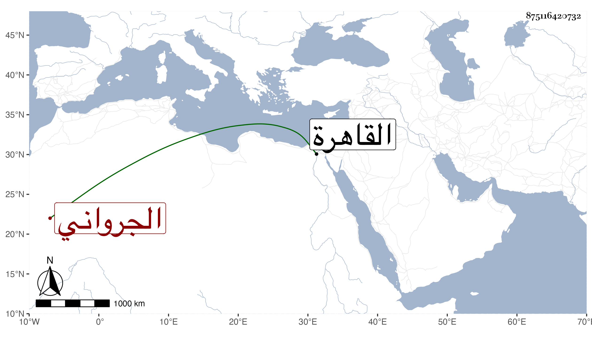

0902Sakhawi.DawLamic.ITO20230111-ara1.EIS1600.875116420732
Biography ID: 875116420732
302
محمد بن أحمد الجرواني نزيل القاهرة ، ذكره شيخنا في إنبائه فقال : ولد سنة تسع عشرة وسبعمائة وكان يذكر أنه سمع من الحجار فلم نظفر بسماعه ، نعم كان حسن الخط عارفا بالوثائق وله فيها تصنيف ونظم فيما يزعمه وإلا فهو بغير وزن ولا معنى . وقد انتسب إلى الحسن بن علي وصار شريفا فكان يطعن في نسبه ويقال أنه كان أولا يكتب الأنصاري . مات سنة ثلاث عشرة . قلت وقد مضى محمد بن أحمد بن محمد بن عبد الله بن عبد المنعم وأجوز كون صاحب الترجمة جده وأنه محمد بن عبد الله بن عبد المنعم فقد أجاز لشيخنا ابن الفرات وحينئذ فأحمد غلط والله أعلم .
